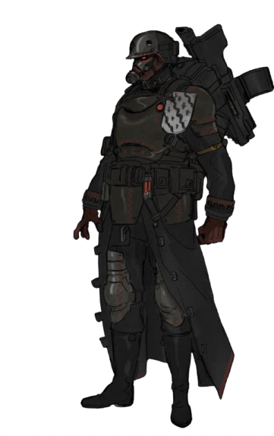

Venit Military Company Breakdown
Manpower: 42
Company Type: Mounted Infantry (Assault Bike Each Equipped With A Multilaser [0.9x, 0.8x])
Foci: Rough Rider
Main Weapon: Hotshot Lasgun (0.5x)
Armor: Guard Carapace (0.4x)
General Modifiers: Barding (0.9x), Engineers (0.6x), Photovisors (0.9x), Insulated Armor (0.9x), Metal Limbs (0.6x), Servo Assistor (0.9x)
Veterency: 7
Veterency: Heavy Weapon Specialists,
Hardy, Salvagers, x2 Well Trained
(Engineering), x2 Noted (Metal Limbs)
Special Weapons: 125 Ceramite
Shields
Description: The Venus Military
company produces highly augmented,
loyal, and trained soldiers able
to dispatch all but the
strongest enemies of House
Nomenica. Riding on assault
bikes equipped with
Multilasers, and personally
equipped with lasguns while
further armored, these soldiers
are hard to kill in almost any
situation. These soldiers are
also mechanically augmented,
trained engineers, and have their
sight improved further than normal.
Amount Of Companies In Force: 2
